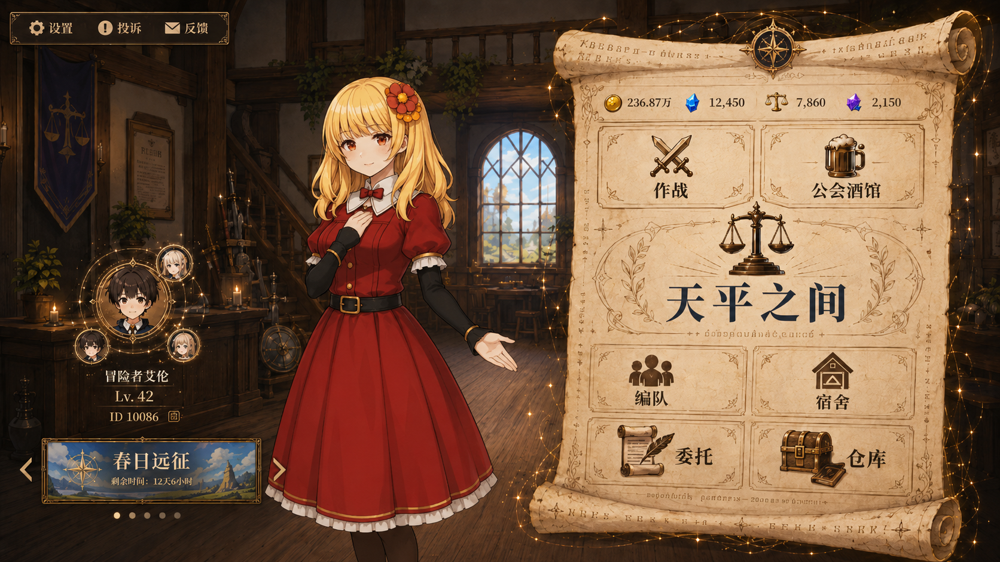
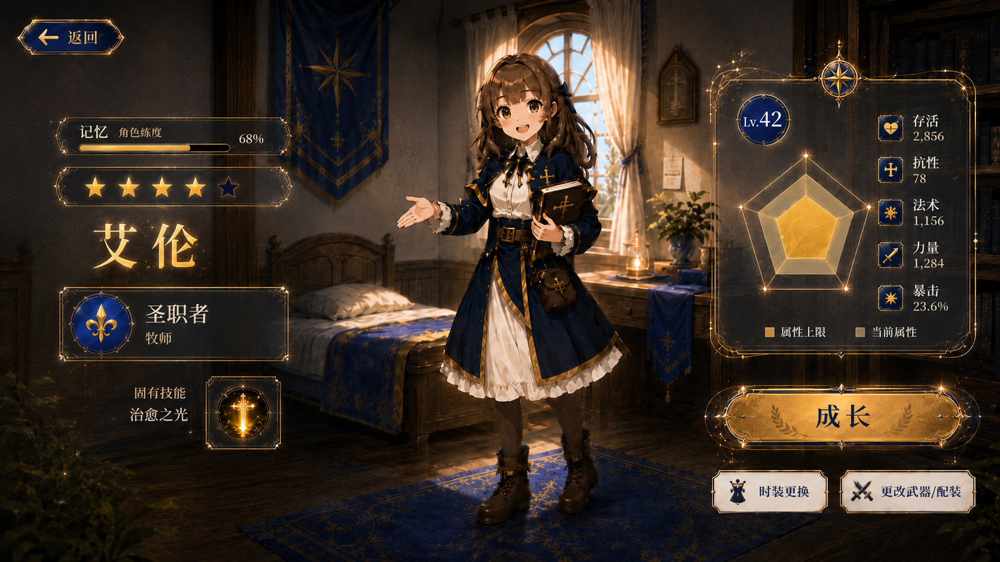
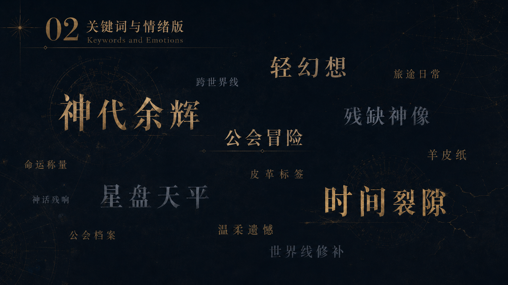
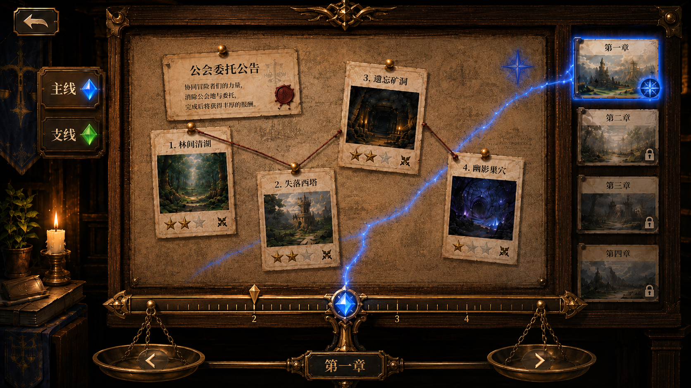
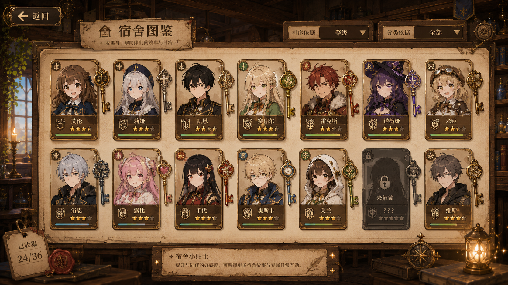
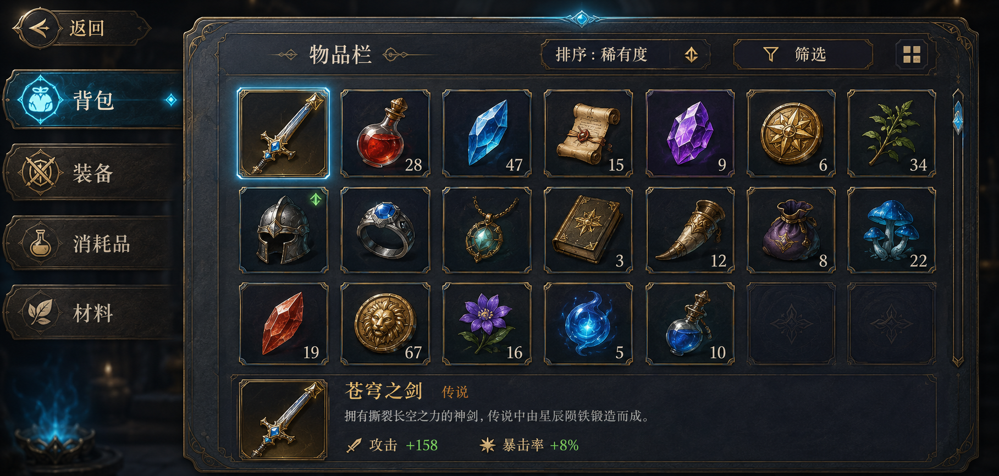
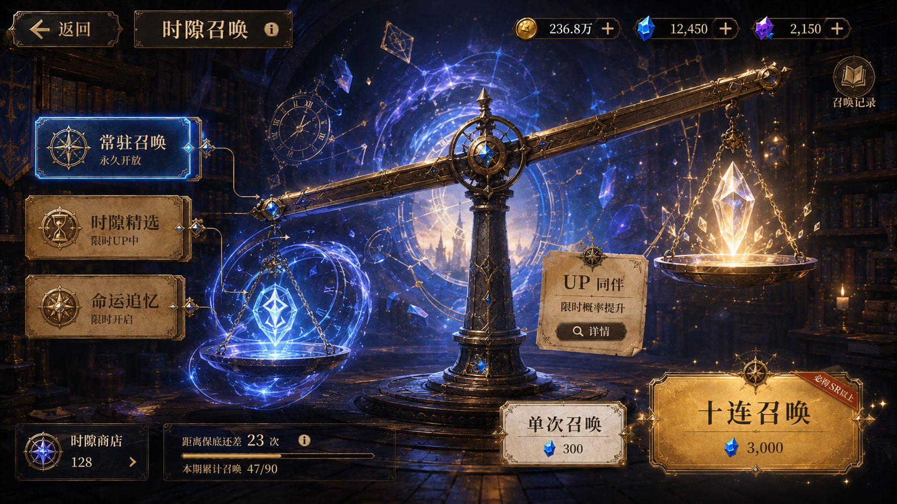
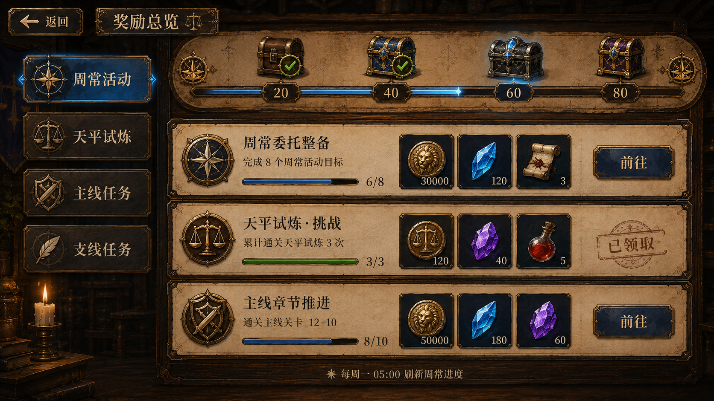
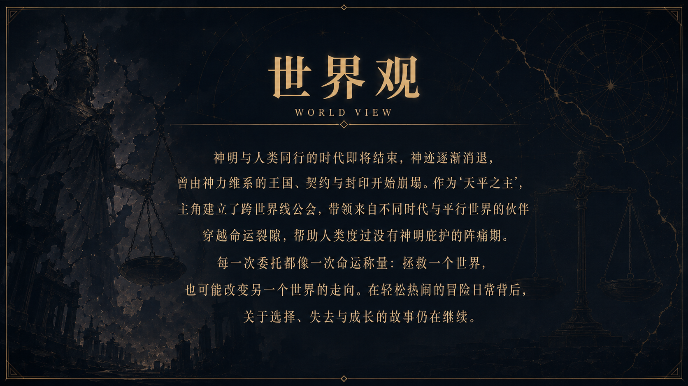

系统数量多、数值层级复杂，同时需要保留原作厚重的幻想氛围。
Game UI Redesign / 2026
ASTLIBRARevision
以“天平、命运与时间”为线索，为幻想动作 RPG 构建一套兼具古典叙事感与现代信息效率的界面系统。每个菜单都像一本被重新装订的冒险档案。
查看完整界面 ↓
01 / Project Brief
把复杂系统收进一册命运档案
角色成长、任务、背包、图鉴、抽卡与世界观拥有不同的信息密度。本项目通过统一框架和差异化内容区域，把多个子系统组织成连续的冒险阅读体验。
用天平、金属框、羊皮纸和深色星空表达命运被衡量与记录。
主界面、任务、角色属性、人物图鉴、背包、抽卡、奖励与世界观。
02 / Visual System
古典外壳，现代骨架
装饰纹样负责世界观，网格与色彩状态负责操作效率。金色标示关键选择，酒红色承载危险与奖励，午夜蓝稳定大面积背景，避免华丽元素淹没信息。
统一导航骨架
各系统共享顶部身份区、侧边分类与主体内容框架，让玩家进入新页面时仍能快速判断位置和下一步操作。
数值层级
角色属性以大数字建立即时战力判断，再用条形、图标和说明承载细节；重要变化使用金色和酒红色进行对比。
物品与收藏
背包与图鉴使用稳定的卡槽尺度，稀有度、类别和选中状态不依赖单一颜色，减少复杂列表中的识别负担。
叙事型反馈
抽卡、奖励与世界观页面适当放大图像和留白，使功能流程在关键节点转变为具有仪式感的叙事片段。
FATE GOLD
#C9A45E
#C9A45E
WINE RED
#8A263B
#8A263B
MIDNIGHT
#071324
#071324
PARCHMENT
#D7D0BD
#D7D0BD
03 / Information Architecture
八个界面，一条成长主线
所有页面围绕“确认当前状态、选择行动、获得反馈、理解世界”四类任务展开，减少系统之间的割裂感。
主界面汇总角色状态与冒险入口。
任务与世界观明确目标及叙事背景。
属性、背包和图鉴支持成长决策。
抽卡与奖励强化阶段性反馈。
04 / Interface Gallery
界面就是冒险的装帧
大画面完整展示系统结构，局部页面交错越出网格，形成类似档案页与记忆卡片叠放的层次。








设计反思：这套界面的难点不是增加更多装饰，而是决定哪些地方应该安静。通过固定导航、统一卡槽与明确状态色，复杂系统获得稳定骨架；后续可继续补充手柄焦点、动效节奏和战斗内外的视觉衔接。
Continue Diving